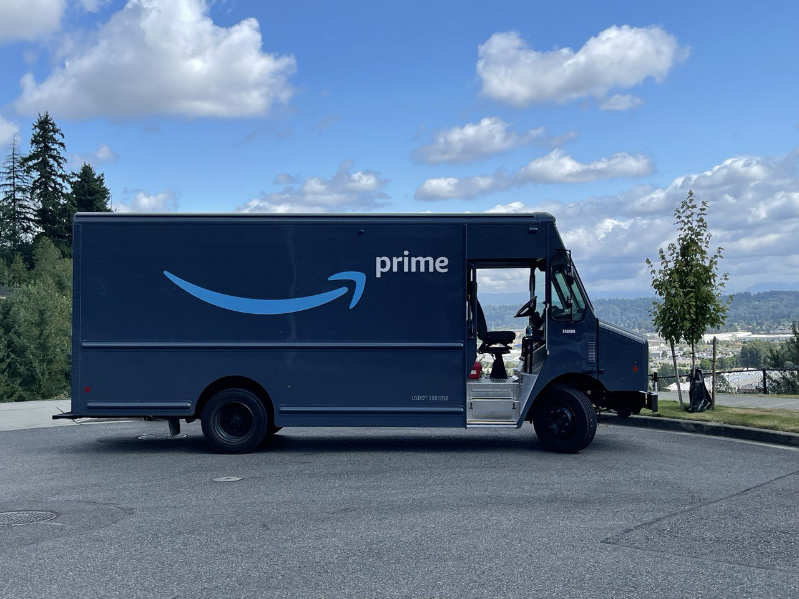

About My Posiosion
I started with Amazon DSP 4 years ago. I was only a driver. I enjoyed delivering. The abilities to go around the cities and deliver packages was exciting to me. I always liked driving so, driving and getting paid felt nice.
As time went on the management decided to offer me a dispatcher position. That required me less driving and be back in the staion monotoring and assisting drivers on the road
So, I am doing this job for a while and slowly I have been given more responsibility
In addition, I have been offred a manager position in future which I am excited and at the same time nervous. I am looking forward to it
About this Job

As DSP contracting with Amazon there is lots of changes always. So, that makes people come and go. Out goal as Employers retain people and keep the health of the company in a good state. Let me tell you a little about this:
As a Amazon delivery driver your area to deliver might be diffrent each week. Yeah I know it sounds a little scary but I actualy like it. Because that way I was not getting tired of the area and job is always challenging and it does not get boring.
This is a simple job but at the same time it can be physically demanding. First, few week is always the hardest. After you get use to the job it becomes second nature.
On the other hand, being a amazon delivery driver could be fun:
- work independently(no boss around to tell you what to do constently)
- you can listen to your music or favotite podcast
- get to see cool places and learn diffrent cities
- its a exeresise and helps you be in shape
- Lots of people use this as way to stay active and lose weight. I know so many drivers that they lost their weight and got to a better shape.
Another big reason that people stay with us is the work culture.
Work Culture

Being a Amazon Driver might not be the highest paying job out there.
But we as a family own company have somthing that you can not find any where work culture.
One of the reason I styed here for 4 years was becuase of the I felt confortable and it does not feel like a offical coorparate envirnment. You can have any kind of hair style, tatto, any culture and back ground we allfit in one place. I made lots of good friends here when at work we make make joke, mess around, laught, race each other on the road we make this a fun work place.
Benefits

- We offer Health Insurance
- 10 hours guarantee a shift
- Bounes
- You can get in shape
- fun work culture